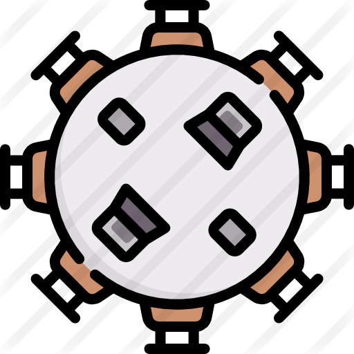

<!--
  Generated template for the MesasPage page.

  See http://ionicframework.com/docs/components/#navigation for more info on
  Ionic pages and navigation.
-->
<ion-header>
  <ion-navbar color="navegador">
    <button ion-button icon-only menuToggle>
      <ion-icon name="menu"></ion-icon>
    </button>
    <ion-buttons end>
      <button (click)="salir()" ion-button icon-end>
        Salir

      </button>
    </ion-buttons>

    <ion-title>
      Administración de mesas
    </ion-title>

  </ion-navbar>
</ion-header>

<ion-content >
    <ion-refresher (ionRefresh)="actualizando($event)" >
        <ion-refresher-content></ion-refresher-content>
      </ion-refresher>
      <ion-grid class="background">
          <ion-row style="height: 100%;">
      
          </ion-row>
        </ion-grid>
    <ion-list>
      <ion-list-header color="light">
        <strong>Mesas</strong>
        <ion-icon item-end name="person"></ion-icon>
      </ion-list-header>
      <ion-item-sliding *ngFor="let i of arreglo">
        <ion-item>
          <ion-avatar item-start>
            
          </ion-avatar>
        <h2><strong>Mesa:</strong> {{i.id_mesa}}</h2>
        </ion-item>
        <ion-item-options side="right">
          <button color="danger" (click) = "eliminar(i)" ion-button>
            <ion-icon name="trash"></ion-icon>Eliminar
          </button>
        </ion-item-options>
      </ion-item-sliding>
  
  
    </ion-list>
    <ion-fab right bottom #fab>
      <button ion-fab color="botonflotante">
        <ion-icon name="arrow-dropup"></ion-icon>
      </button>
      <ion-fab-list  side="top">
        <button ion-fab  (click) = "agregar(fab);">
          <ion-icon name="add"></ion-icon>
        </button>
      </ion-fab-list>
    </ion-fab>
  </ion-content>
